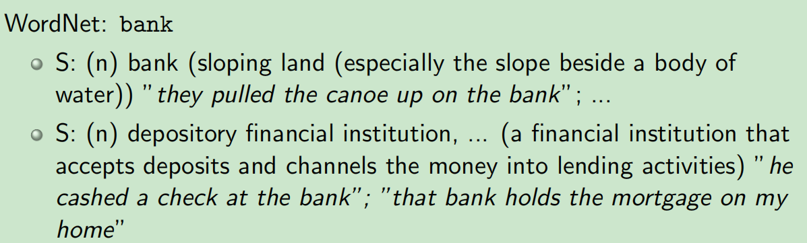
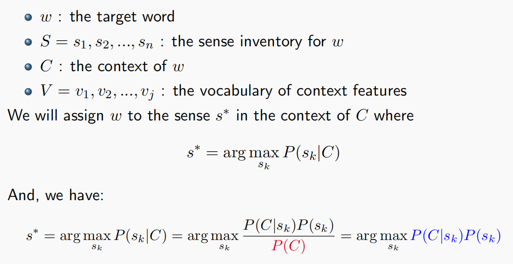
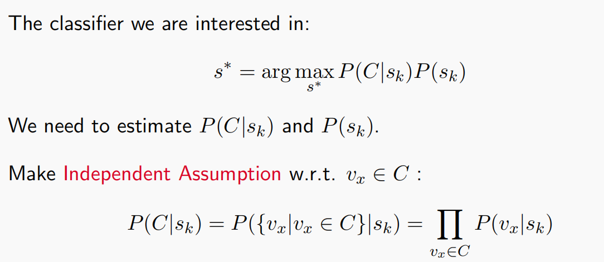
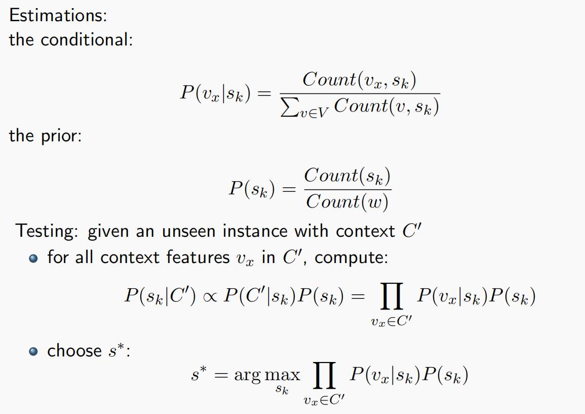
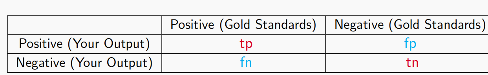
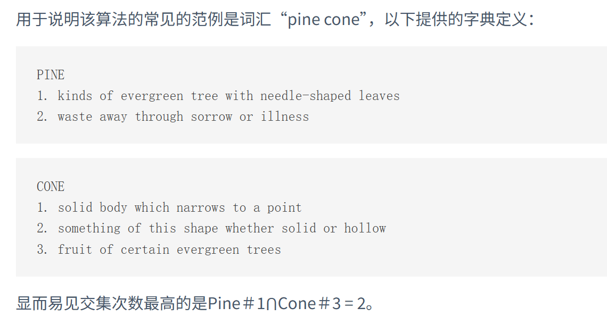
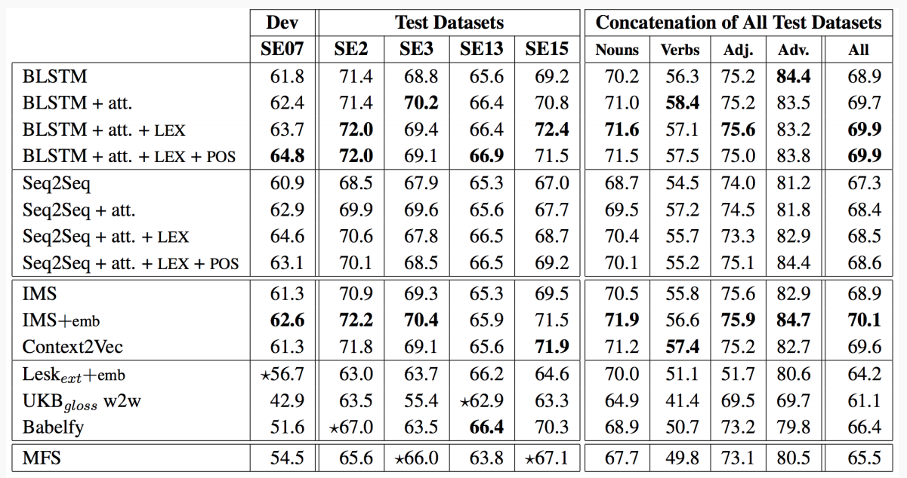
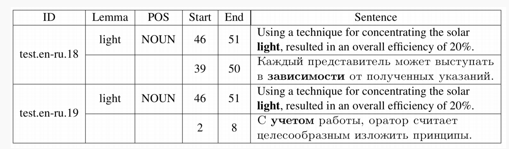

02 · 词义消歧
← 返回课程目录The original article content is not automatically translated.
本文最后更新于 2026年11月5日 晚上
北京大学信息科学技术学院 自然语言处理基础(2026春)的课程笔记
第二讲：Word Sense Disambiguation
词义消歧任务
背景：一词多义问题
一个"can"可能有6种不同的意思，“长”这种多音字也不好对付
我们必须在所有可能里选出适当的那个意思/读音
(新冠时期经典笑话：Be Positive!Be patient!)
给定一个语义模糊的单词及其具体语境，我们需要确定其含义
对于计算机来说，
输入：目标词、上下文、这个词可能的所有语义
模型：提取多种特征并与现有知识进行比较
输出：该语境中目标词的语义标签
计算机应该预先掌握目标词所有可能的含义，称为Sense Inventory，可以从词典、WordNet中找，WordNet是一个庞大的英语词汇数据库

如上，这是WordNet对bank这个词一词多义的解释
机器学习方法在词义消歧中的应用
有监督学习、半监督学习、无监督学习等方法
监督学习
1.获取训练数据(带标签)
2.为每个实例提取多种特征
3.建立数学模型
4.给出未见过的实例，预测最合适的标签
选择范围广泛，性能有竞争力，但对数据质量要求较高
半监督学习
1.获取少量人工标注语料库作为种子
2.通过bootstrap获取更多标注样本
3.重复上述过程，遵循监督学习的方法
易于获取大量训练数据，但难以评估数据质量，应用时需要很多trick
无监督学习
从语境中提取特征，对词语用法进行分组，原理：相似意义出现在相似语境中
无需收集训练数据，但聚类结果不好解释
我们下面主要讲解监督学习，它有两大核心部分：提取上下文特征和选择模型
朴素贝叶斯模型
让我们回顾一下经典的贝叶斯公式：
例如A是书的类型，B是书中的词汇，首先给出训练数据，预测、和，然后找出最大化的标签

对于词义消歧来说，我们首先给出一些定义
为目标词汇，为的Sense Inventory(所有词义的集合)，为的上下文，为上下文特征词汇
然后假设的真正意思是，满足对上下文来说遍历所有可能的，最大。

那么由贝叶斯公式，此处忽略，即可得出
而为了简化计算，我们采用独立性假设，即上下文特征中每个词都是独立不相干的！请注意这种假设并不正确，事实上词汇总有一定相关性，但这样一来就可以像上面一样极大简化计算

由此，我们通过直接统计，用频率估计概率，即可一一算出和
测试时，给定未见过的实例及其上下文，对于所有上下文特征，进行上面的计算，即可选出
如何评估一个词义消歧系统

假设我们在处理一个二元的词义消歧任务(只有Positive和Negative两种可能)，如上列出经典的2×2列联表
tp：实际真，你预测的也是真
fp：实际假，你却预测成了真
fn：实际真，你却预测成了假
tn：实际假，你预测的也是假
那么自然就有准确率
当然我们还有别的指标
表示你所预测的真中实际也为真的概率，也即你预测真的准确率
表示实际为真中被你预测为真的概率，称作召回率，大概是你把实际为真的数据“召唤”回来的概率
为准确率和召回率的加权调和平均，特别的
Macro F1：对所有类别取平均值
Micro F1：对所有实例取平均值
一个小问题
Lexi是一名全科医生，她的主要职责之一是听取患者的主诉，并快速判断该患者是否具有高卒中风险(中风)，是否需要立即送往急诊科。您认为Lexi的最佳评估指标是什么？
答案是召回率，因为本来没病被判断成有病(fp)问题不大，但是本来有病你却误判成没病(fn)问题就很大了，所以召回率比精确率更重要，这就是所谓的宁可信其有不可信其无，宁可错杀三千不肯放过一个()
其它需要注意的点
如果我们缺乏注释，我们的语言不断演变，最终不得不处理一种全新的语言
所以我们需要假设！
Most Frequent Sense：直接采用这个词最常用的意思
例如plant这个词，工厂的意思比植物的意思更常见，那我们就无脑地把每个plant都标注为工厂
One Sense per Discourse：词汇往往会在特定语境中保持语义恒定性
还是以plant为例，如果一段话中plant出现10次，那么大概率都是同一个意思，这时如果判断出其中一次意思是植物，那么剩余的九次应该也是植物之意
One Sense per Collocation：一个词在相同搭配中往往保留含义
如plant与industrial共同出现，那么这时的plant基本是工厂之意
Lesk：假设词汇与上下文有相同主题，对于有歧义的词，计算同时出现在上下文和字典定义中的词汇数量，选择次数最多的为词汇解释

这些假设有的听起来十分武断，像是“一刀切”，但最后跑出来的效果都不差，请看下图

在预训练时代，我们直接编码上下文，encoder,decoder……在此不多赘述

当然还有多语言任务，如英语和俄语，这里需要使用WiC： Word-in-Context数据集
视觉消歧任务：给定一个词和有限的上下文，任务是从一堆图像中选出与这个词预期含义相对应的图像，nlp与cv的结合